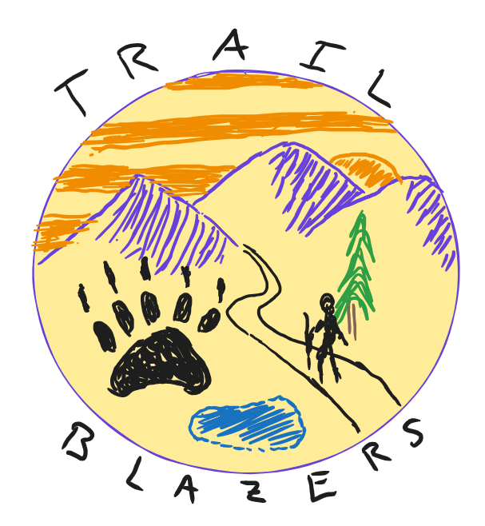

Overview User Feedback Reqs Spec Storyboard Systems Modeling High-fidelity Prototype Design CritsRequirements Specification
Project Goals
To specify and categorize functional requirements, data requirements, non-functional requirements, software requirements, and hardware requirements.Functional Requirements
- The system shall allow users to browse and view trail and route data in a map-based interface.
- Non-contributing users shall be able to use existing trail information without creating content.
- Contributing users shall be able to submit new routes, descriptions, and photos for review.
- Admins shall be able to review, approve, or reject user submissions before those changes are published.
- The system shall support trail-condition reporting, including hazards like downed trees, washouts, or unsafe sections.
- Users shall be able to edit or update route information while maintaining a moderation and validation workflow.
- The app shall support engagement features such as experience points and route-related interactions without compromising admin oversight.
Data Requirements
- The system shall store route metadata, including route names, descriptions, difficulty, access conditions, and geospatial route paths.
- It shall maintain user-generated content, including submissions, edits, and associated photos or media files.
- It shall store trail-condition data such as hazards, maintenance issues, and route status updates.
- The database shall support separate roles for admins, contributing users, and non-contributing users.
- The system shall include validation and moderation workflows so inaccurate or unsafe content is rejected before public release.
- Data shall be structured to allow efficient lookup, updates, and retrieval for map-based route information and user interactions.
Non-Functional Requirements
- The interface shall be simple, intuitive, and easy to navigate for both new and returning users.
- Route submission and editing shall be quick and approachable, with a target of under 10 minutes for a straightforward update.
- The review process shall be efficient, with human review expected to take about one week and automated review under one day when applicable.
- The system shall prioritize safety and accuracy by validating route information before it is published.
- The app shall support mobile use for end users while also supporting desktop workflows for admins and reviewers.
- The system shall be reliable, maintainable, and scalable for future route growth and additional map data.
Hardware Requirements
- The project will be developed primarily on laptops and desktop computers for coding, testing, and iteration.
- The client, Austin Herron, is more familiar with desktop workflows, so desktop-oriented review and testing will be important.
- The end-user application will be built primarily for mobile devices because most outdoor app users access trail data on their phones.
- The system will rely on cloud-based services for storage, hosting, and backend support.
Software Requirements
- We will build a mobile application alongside a companion desktop web application.
- The database will use PostgreSQL, with Firebase used for hosting and deployment support.
- The frontend will use React Native to support mobile development in a framework the team is familiar with.
- The backend will use Go for performance and compatibility with the onX stack.
- Firebase will also be used for authentication and backend hosting because it is easy to prototype with and deploy quickly.
- The mapping system will include multiple layers: rendering, tile hosting, imagery, and data.
- Map rendering options include MapLibre and Mapbox, while tile hosting may use PostGIS, Tippecanoe, PMTiles, or Planetiler.
- Imagery sources may include NAIP, USGS 3DEP, and USGS US Topo for terrain and topographic information.
- Map data may come from sources such as Regrid API or PAD-US, depending on availability and requirements.
Appendix A
A link to the requirements spreadsheet can be found here: